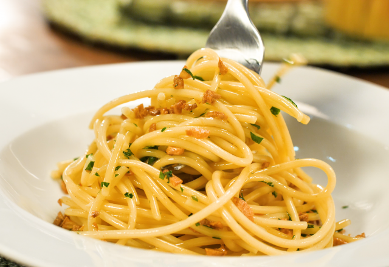
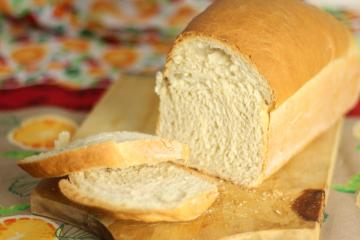
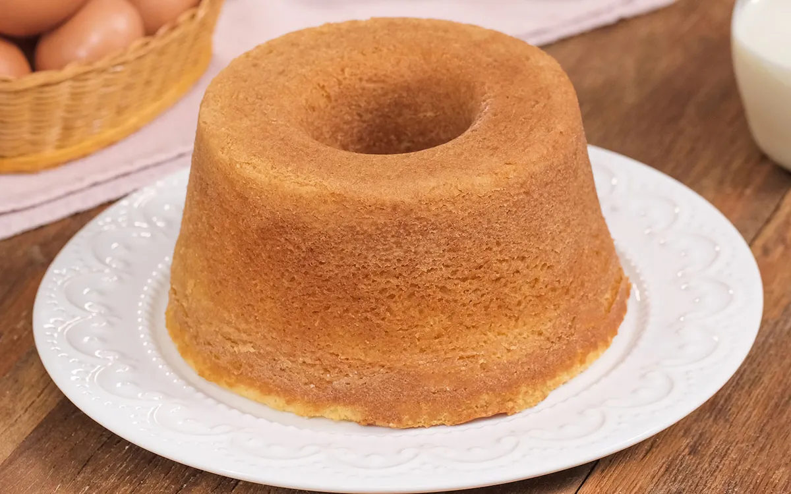
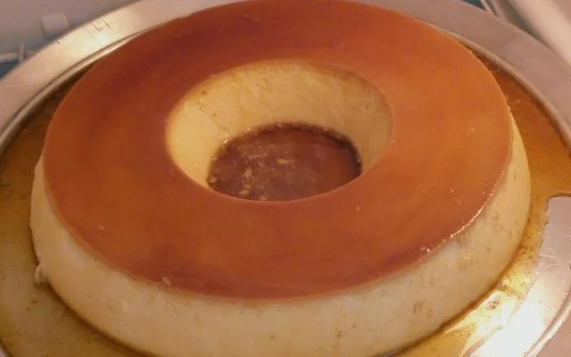
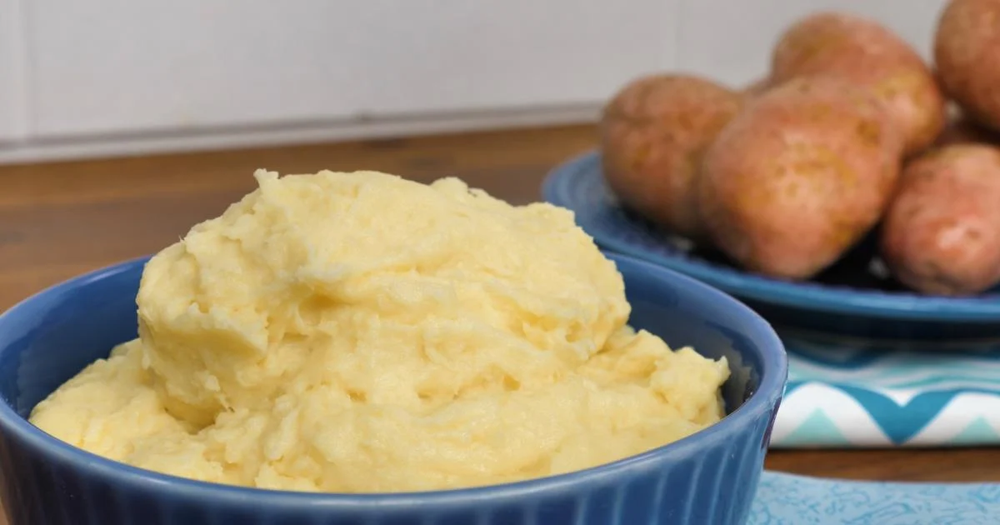
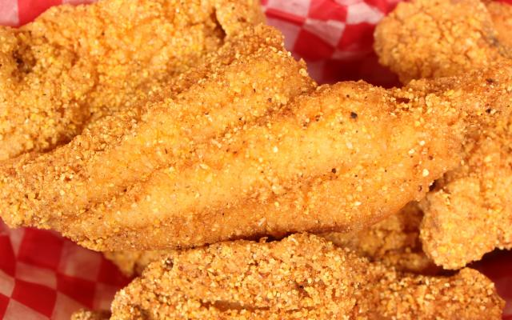
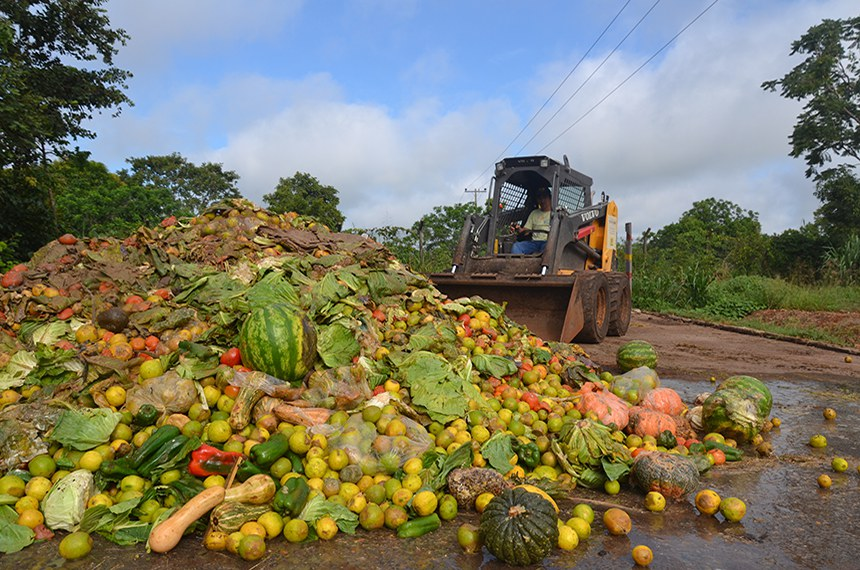

Receitas
-

Macarrão ao alho e óleo simples
Aquela receita simples e prática que todo mundo ama: macarrão ao alho e óleo! A presença do alho douradinho dá um sabor único a esse prato! Veja agora mesmo como fazer essa massa que todo mundo ama!
-

Pão caseiro
Fazer pão caseiro é uma experiência gratificante e deliciosa, especialmente quando se pode sentir o aroma irresistível do pão assando pela casa.
-

Pão de queijo tradicional
Quer um lanche rápido? Esse pão de queijo é crocante por fora, macio por dentro e perfeito para qualquer momento! Essa receita rende cerca de 30 unidades
-

Bolo de liquidificador fácil
O bolo de liquidificador é uma receita fácil, simples e que leva apenas 6 ingredientes: ovos, açúcar, farinha de trigo, fermento, leite e margarina. É uma sugestão para o café da manhã ou lanche da tarde.
-

Pudim
O pudim de leite fácil, rápido e prático e irresistível é uma verdadeira tentação para os amantes de sobremesas clássicas.
-

Purê de batata simples
Ele é o acompanhamento ideal para várias receitas tradicionais e deliciosas! Que tal aprender como fazer purê de batata?
-

Peixe frito
A receita de peixe frito é uma iguaria popular em muitas culturas ao redor do mundo. Ela consiste em temperar, empanar e fritar o peixe em óleo quente até ficar crocante por fora e macio por dentro.
-

Strogonoff de frango
O strogonoff de frango é um prato amado por todos e muito fácil de ser preparado! A combinação da carne de frango suculenta com o molho cremoso deixa qualquer um salivando só de pensar.
Alimentos e sua Propriedades
Maçã
A maçã possui potássio, fibras, além de compostos antioxidantes na sua composição. Quando consumida regularmente e como parte de um estilo de vida saudável, a maçã pode ajudar a reduzir o risco de ocorrência de alguns tipos de câncer, como pulmão e cólon, além de reduzir o risco de diabetes e problemas hepáticos.
Banana
Cheia de nutrientes, a fruta auxilia a regularizar o sistema nervoso e o aparelho digestivo. Além disso, o consumo regular oferece resistência aos vasos sanguíneos e evita câimbras, devido à presença do potássio. Enquanto as vitaminas do complexo B são responsáveis pela renovação celular e dos músculos.
Café
Tanto o café como o descafeinado têm polifenois, que atuam como antioxidantes e reduzem os efeitos negativos do stress oxidativo e da inflamação nas nossas células. Além disso, o café em quantidade moderada pode: Ter benefícios neurológicos e atuar como antidepressivo. Melhorar o humor.
Qual é a importância do reaproveitamento de alimentos?
O reaproveitamento de alimentos é uma solução para diversos problemas atuais simples de ser tomada, como desperdício de toneladas de alimentos no mundo, geração de resíduos, poluição, entre outros, basta uma pequena mudança nos hábitos. Para se ter noção, 30% da produção mundial de alimentos é desperdiçada.
Há preconceitos. Muitos não apreciam o gosto ou a textura das cascas e talos, sem contar que elas têm uma taxa maior de agrotóxicos, por isso, sempre é melhor optar por produtos orgânicos e prestigiar mercados que comercializem produtos cuja origem seja mais próxima quanto possível a você.
Mas ao mesmo tempo, eles têm nutrientes e fibras que são passíveis de reaproveitamento. Independentemente das opiniões, que podem variar, cascas de cítricos, batata, abacate sem o caroço e até mesmo cascas de banana têm reaproveitamento. Todos esses restos de alimentos podem ser reaproveitados de três modos: na casa, na comida ou como produto de beleza.
Exemplos Práticos de Reaproveitamento
Bolinho de arroz
O bolinho de arroz é uma delícia clássica e versátil, perfeito para aproveitar sobras de forma criativa. Rico em sabor e crocância, é uma ótima fonte de energia e uma opção que agrada a todos os paladares!
Doce de casca de banana
O doce de casca de banana é uma sobremesa surpreendente e sustentável, rica em fibras e nutrientes que auxiliam na digestão e promovem a saúde da pele, tudo isso com um sabor irresistível!
Suco de casca de abacaxi e capim-cidreira
A receita de suco de casca de abacaxi com capim cidreira fica deliciosa e refrescante, além de ser uma poderosa fonte de antioxidantes que fortalece a imunidade e melhora a saúde dos tecidos, inclusive da pele.
Equipe de cozinha
-
Chefe
Ricardo Almeida
Com anos de experiência em renomados restaurantes, Ricardo é o cérebro por trás de cada prato servido. Ele supervisiona toda a operação, garantindo que os padrões de qualidade sejam mantidos e que a equipe trabalhe de forma harmoniosa e eficiente. Sua liderança inspira os outros a sempre buscarem a perfeição.
-
Cozinheira
Lara Costa
Lara é a mestre das receitas tradicionais e inovadoras. Com um paladar apurado, ela transforma ingredientes simples em pratos surpreendentes. Sua habilidade em combinar sabores e texturas é essencial para o sucesso da cozinha.
-
Cozinheiro
Daniel Pereira
Daniel é o especialista nas técnicas de preparo e execução. Seu foco está em garantir que cada prato saia no ponto exato e com a apresentação impecável. Ele trabalha com rapidez e precisão, sempre pronto para novos desafios culinários.
-
Nutricionista
Sofia Martins
Sofia é a responsável por garantir que todos os pratos atendam às necessidades nutricionais dos clientes, sem comprometer o sabor. Com seu conhecimento em nutrição, ela cria menus balanceados e saudáveis, respeitando as preferências e restrições alimentares de cada pessoa.